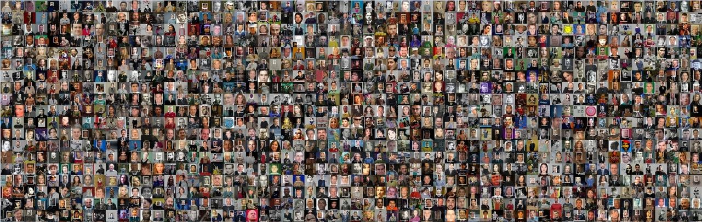

ICCV 2019 Workshop
Face Recognition in the Wild
Nov 2nd, 2019
Seoul, Korea

Call for papers
Though almost saturated performance has been achieved on several classic face recognition tasks in academia, including LFW and Megaface, there are still many open problems for face recognition in industrial applications. For example, the training data might be quite noisy and imbalanced. Our workshop is mainly to discuss how to solve these problems. We call for papers in the following pecific subtopics and also welcome papers for general face recognition. The submission link is
here .
- Large-scale face recognition
- Face recognition with imbalanced training data in the low-shot learning scenario
- Generative model for face synthesis
- Face representation learning
- Disentangled representation learning
- Training with noise labels
- Image understanding with knowledge base
- 3D analysis & synthesis
- Expression analysis
- How humans and face verification algorithms can work together
- Bias in face recognition
Location
News
- 07/01/2019 We are going to host workshop "Face Recognition in the Wild" at ICCV 2019
Challenge of Recognizing People in the Real World
|
| 8:30-9:15 |
| Delving into High Performance Detector for Finding Tiny Faces |
Tang Xu |
|
| 9:15-10:30 |
Very large-scale face recongntion |
| 10:30-10:45 |
Break |
| 10:45-11:30 |
| Uncertainty and Bias in Face Recognition and Expression Analysis |
Weihong Deng |
|
| 11:30-12:00 |
| A Practical Design for Face Recognition with Anti-Spoofing Based on Non-Visible Light Cameras |
Songnan Xi, Lingbo Yang, Yao Zhao |
|
| 12:00-12:30 |
| MT-DR Net: Multi-task Face Information Analysis |
Yue Ming |
|
| 2:15-3:00 |
| How to Regulate Face Recognition |
Prof. Erik Learned-Miller |
|
| 3:00-4:15 |
Challenge of face recognition in the industrial applications |
| 4:15-4:30 |
Break |
| 4:30-5:30 |
Panel discussion: Face recognition in the future |
| 5:30-6:00 |
| Dyn-arcFace: Dynamic Additive Angular Margin Loss for Deep Face Recognition |
Jichao Jiao, Jian Jiao, Weilun Liu |
|
| 6:00-6:30 |
| Adjacent Agglomeration Face Detector |
Yang Bai, Zhicheng Zhao, Fei Su, Hui Tian |
|
|